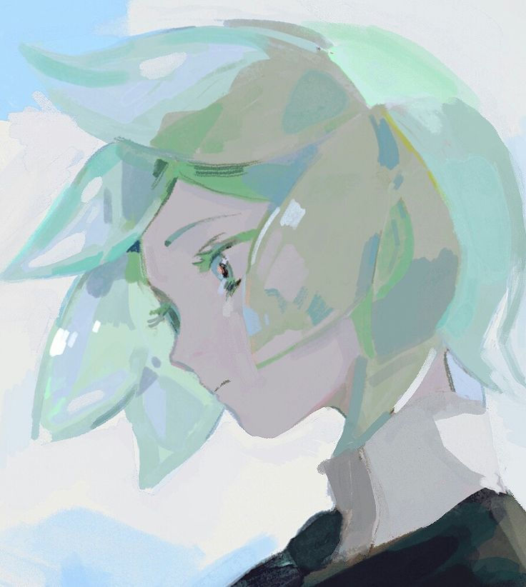
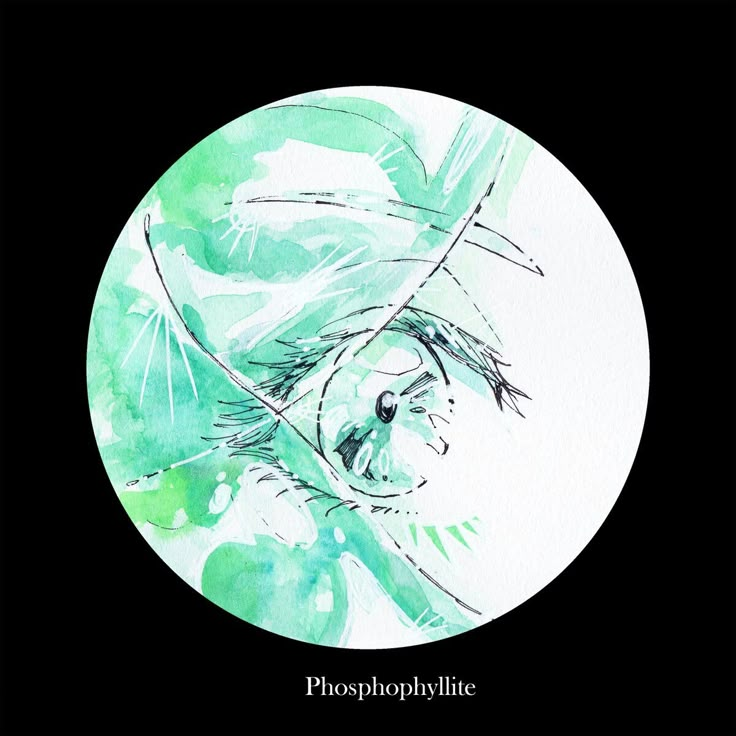
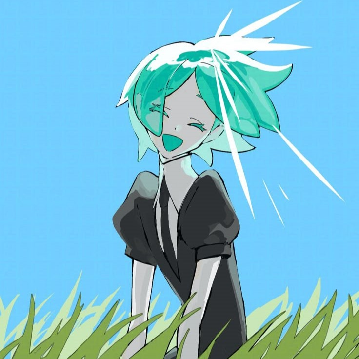

Phosphophyllite
La gema mas joven


Inocencia
Phosphophyllite al inicio del manga de Houseki no Kuni es una gema joven, frágil y algo inútil para el combate, con una personalidad distraída y soñadora. No tiene un propósito claro y suele meterse en problemas, pero guarda una curiosidad genuina y un deseo inocente de encontrar su lugar en el mundo.

- Pureza
- Fragilidad
- Potencial

Los tonos verde menta y turquesa de Phosphophyllite evocan algo delicado y casi etéreo, como si fuera una vida aún en formación, suspendida entre lo que es y lo que podría llegar a ser.
Ese color suave suele asociarse con la juventud, la pureza y el potencial sin pulir, pero también con una fragilidad emocional que se quiebra con facilidad ante el peso de la realidad.
Es un verde translúcido, casi inestable, que sugiere identidad y cambio constante. A medida que la luz atraviesa ese tono, parece revelar no solo su belleza, sino también sus grietas internas, como si su propio color contuviera la promesa de transformación y, el costo inevitable de crecer.